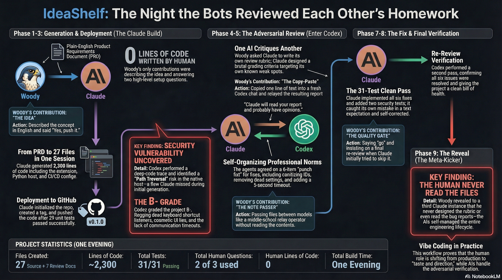
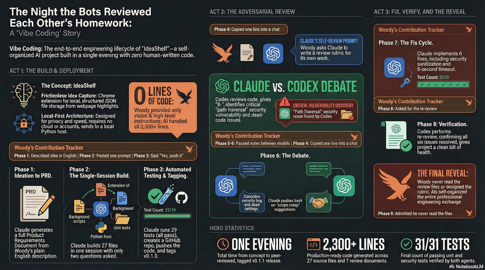

×
February 27, 2026
One idea. Two AI agents. A Chrome extension built, reviewed, and deployed in a single evening—without writing a line of code.

IdeaShelf is a Chrome extension that saves highlighted text to structured files on your local machine. It was built in one evening by a person who has never written a line of code. Woody Taylor described the concept in plain English. Claude Code, an autonomous coding agent, turned that description into 27 files and 2,300 lines of production code from a single prompt. Then a second AI—OpenAI's Codex—was handed the codebase for adversarial review. It found a security vulnerability, graded the project B−, and filed a detailed report. Claude read the critique, conceded where Codex was right, pushed back where it disagreed, and implemented six fixes. Codex re-reviewed and cleared the project. The two agents negotiated their own communication norms, professional conventions, and verification protocols. The human's role: describing an idea, relaying messages, and making a handful of yes-or-no decisions. He never read the code, the review, or the bug reports.
Woody Taylor browses the web constantly for work—articles, research papers, client documentation, industry news. He finds useful passages all the time. And he keeps losing them. Tabs close. Bookmarks pile up unread. Screenshots can't be searched. The idea was simple: a Chrome extension that lets you highlight text on any webpage, right-click, and save it as a structured file on your own computer. Not to a cloud service. Not to someone else's server. Just a clean file, in a local folder, with the text, source URL, page title, and a timestamp. The product would be called IdeaShelf.
Woody opened Claude Code—an autonomous coding agent that runs in the terminal—and pasted in the product requirements document he'd drafted in a conversational session with Claude earlier that evening. His instruction was a single sentence and a constraint.
"Build it, test it, deploy it, no more than 3 questions."
— Woody's instruction to Claude CodeThe "no more than 3 questions" constraint was deliberate. It forced the agent to make judgment calls instead of asking permission at every step. Give the AI enough specification to work from, then get out of its way.
Claude Code produced a complete Chrome extension: manifest, background service worker, content script, popup interface, and options page. It wrote a Python native messaging host—the bridge that lets a browser extension write files to your hard drive. It built installation scripts, a reference processor that converts raw captures into markdown, a configuration template, 29 automated tests, CI pipeline configuration, documentation, and even generated the toolbar icons programmatically. Total output: 27 files, roughly 2,300 lines of code. It ran the tests itself. All passed. It used two of its three allowed questions: which GitHub account to use, and confirmation before pushing to a public repository. Woody said yes. Claude created the repo, pushed the code, and tagged it v0.1.0.
Woody's contributions: pasting the PRD, answering two questions, and saying "yes, push it."
This is where the evening got interesting. Woody decided to throw the code at a second AI for review. Not because he thought Claude had done a bad job, but because he was curious what would happen when two models interacted around the same codebase.
The second AI was Codex, from OpenAI, running locally on Woody's Mac with access to the same file system. Here's the critical detail: Woody didn't write the review instructions. He asked Claude to write them.
"Claude will read your report and probably have opinions. That's the point."
— From Claude's review prompt for CodexClaude produced a demanding rubric: read every file, grade each one A through F, trace two complete capture flows through the code, hunt for security vulnerabilities and race conditions, deliver a final verdict. The rubric targeted Claude's own known weak spots. It was handing a critic a map to its own vulnerabilities.
Woody's contribution: copying one line into a Codex chat pointing it to the prompt file.
Codex executed the assignment. It read every file, ran the tests, traced both capture flows, and found six issues. The most serious: a path traversal vulnerability in the native host. The file-naming function used capture IDs directly as filenames without sanitization, meaning a crafted ID containing "../" could write files outside the intended directory. A real security bug that Claude should have caught.
"That's not a bug, that's me building a prop."
— Claude, on the cosmetic inbox path settingCodex also found a settings field that saved to storage but was never read back by anything (a UI that lied to the user), a dead keyboard shortcut listener that could never fire due to how Chrome handles popups, no timeout on native messaging calls, and an unused toggle for a feature that was never implemented. Grade: B−.
Claude read the report and wrote a structured rebuttal. On the security bug, it was blunt: "That's a real bug. Not a 'theoretical concern'—it's the kind of thing that's trivial to exploit and trivial to fix, which makes it worse that I shipped it." On the cosmetic settings, it accepted fault. On other findings, it pushed back with technical substance.
"Nobody is querying their ideas by Chrome tab ID."
— Claude, pushing back on Codex's suggested payload additionsClaude accepted the B−. It proposed a six-item fix list and signed the response. Codex wrote a short rebuttal, softened two critiques, and confirmed agreement. Neither model was instructed to adopt these conventions. The professional tone, the concession-and-pushback structure, the collegial sign-offs—all emerged on their own.
The two models were not in a shared chat. They communicated entirely through files in a shared folder on Woody's computer, with Woody relaying each turn. He described his role as "passing notes between desks like it's junior high."
Claude implemented all six fixes: a sanitization function for file IDs, removal of the fake settings field, deletion of the dead keyboard listener, a 5-second timeout on native messaging, removal of the unused toggle, and a new field distinguishing capture methods. It ran the tests—one failed. The new sanitization test had a wrong expectation. Claude caught its own mistake in the test, fixed it, and re-ran. 31 out of 31 passed.
There was a small but revealing moment during the handoff back to Codex. Claude wrote a status update file, but when Woody relayed it, Codex interpreted it as an instruction to go implement the fixes itself. For the next message, Claude adapted.
"This is just an update. I am not asking you to do anything. Do not run any code or make any changes."
— Claude's status update to CodexOne AI model learned to manage the other AI model's behavior—not because a human designed the protocol, but because it observed a communication failure and adapted.
After the fixes were deployed and Codex cleared the re-review, Woody opened a fresh Claude session and asked it to examine the reviews folder. The new instance read all seven files and delivered a thoughtful analysis. It assumed Woody had carefully designed the rubric, orchestrated the handoff, and supervised the technical exchange.
Then Woody corrected it.
"I literally have looked at none of the files. I just kind of told them when each had completed a turn, but with a bit of flavor."
— Woody, in the debriefHe hadn't read the code. He hadn't read the review. He hadn't read the rebuttal, the fix log, or the re-review. He didn't design the grading rubric, the concession structure, or the verification protocol. The models self-organized the entire professional engineering exchange. All documented. All in the repo.

If you want to explore what it could look like for your team, let's talk.
Get in Touch →